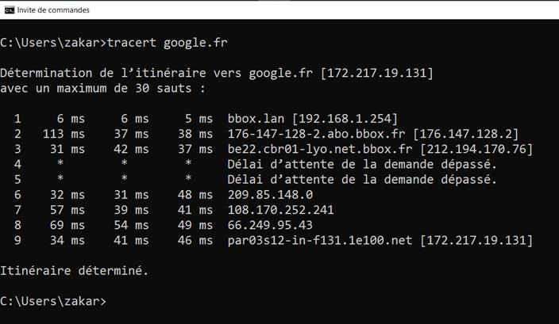
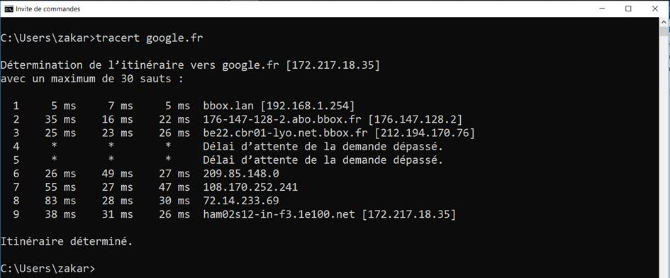
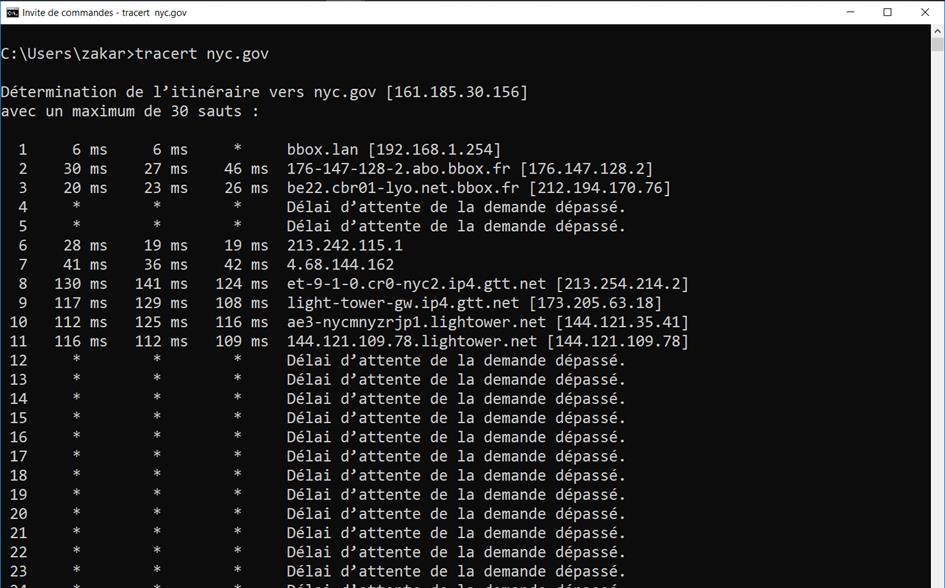
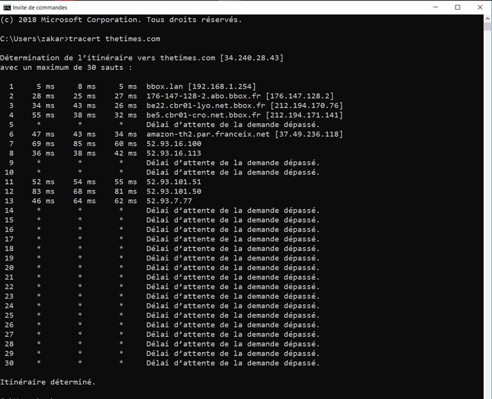

Réflexion sur la perte de paquets
Partir de la perte d’un paquet pour introduire le RTT, le TTL et l’observation des routes avec tracert.
Comment détecter un paquet perdu ?
Certains paquets peuvent se perdre où ne jamais arriver à destination (suite à la rupture d’un lien, collisions, mauvais routage...)
Comment savez-vous qu’un paquet n’est jamais arrivé à destination ?
la source n’a pas reçu d’accusé de réception.
Oui mais au bout de combien de temps considère-t-on un paquet perdu dans les protocoles TCP/IP ?
Le support introduit ensuite le RTT comme délai de référence.
Ce temps est défini par le TTL (Time To Live – temps à vivre). C’est le temps pendant lequel une information doit être conservée ou le temps pendant lequel une information doit être gardée en cache. Il est codé sur 8 bits et permet un temps entre 0 et 255 ms.
Que feriez-vous si un élément n’arrive pas à destination (pas d’accusé de réception) ?
renvoyer le paquet
RTT et TTL
Dans le protocole TCP/IP, la durée au-delà de laquelle on considère que le paquet est perdu est appelée RTT et est comprise entre 0 et 90 ms. C’est très court à échelle humaine mais tout va très vite dans un câble, donc 90ms est un temps assez long pour considérer un paquet perdu.
RTT ou RTD (Round-Trip Time ou Round-Trip Delay) : Il s'agit du délai exprimé en ms du temps de réponse. Ce délai indique le temps mis par le paquet pour atteindre sa destination et revenir. Plus ce délai est proche de 0, au plus la qualité de la connexion est bonne
De plus, un paquet a une durée de vie TTL (Time To Live, 8 bits) : Ce champ est initialisé par l'émetteur puis diminué par chaque routeur traversé. Quand le TTL arrive à 0 (TTL de départ = 255 ou 127), le paquet est supprimé par le routeur qui avertit l’expéditeur (ex: principe de fonctionnement la commande traceroute).
Observer le chemin avec tracert


Chaque étape est un routeur. On peut repérer que l’on passe par la Box du fournisseur d’accès. Les autres sont des routeurs d’Internet. Certains ne répondent pas à notre demande d’info (Délai d’attente de la demande dépassé).
À noter que la même commande peut donner des adresses différentes. Cela veut dire en quelques sortes qu’il y a plusieurs serveurs google.fr. Toutefois le chemin est presque le même.


On peut voyager un peu en allant par exemple à la mairie de New York (USA). Visiblement on passe par la light tower (il se peut que 30 sauts soit insuffisants).
La commande tracert peut ne pas réussir à déterminer précisément tous les sauts sans pour autant échouer.